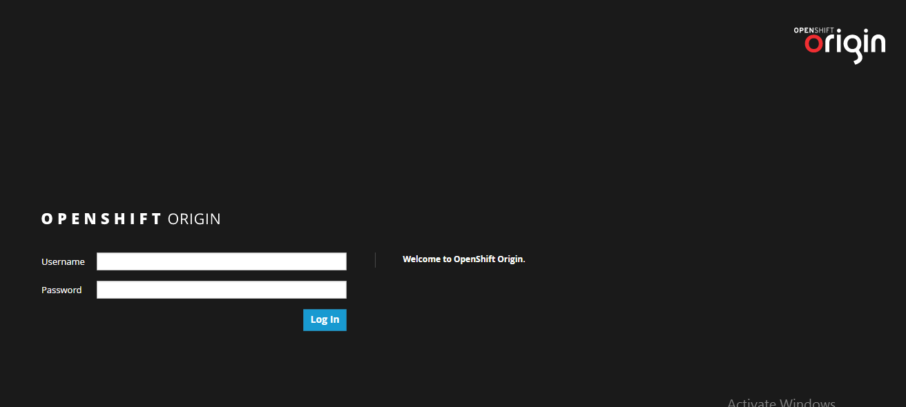

Login to OpenShift Command Line Interface
click here to download OpenShift CLI
1. Run login command oc login [OPENSHIFT_URL]
2. Entry the username and password
$ oc login https://lb.osh.telkom.co.id:8443
Authentication required for https://lb.osh.telkom.co.id:8443 (openshift)
Username: user001
Password:
Login successful.
Login to OpenShift Web Console
1. Open OpenShift Web Console by web browser
2. Fill the username and password
